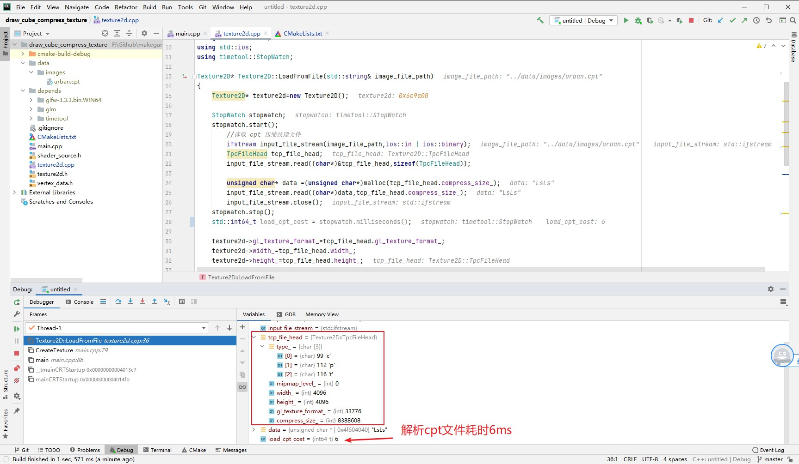
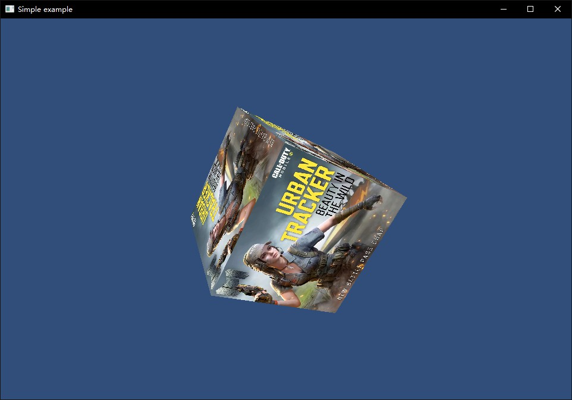
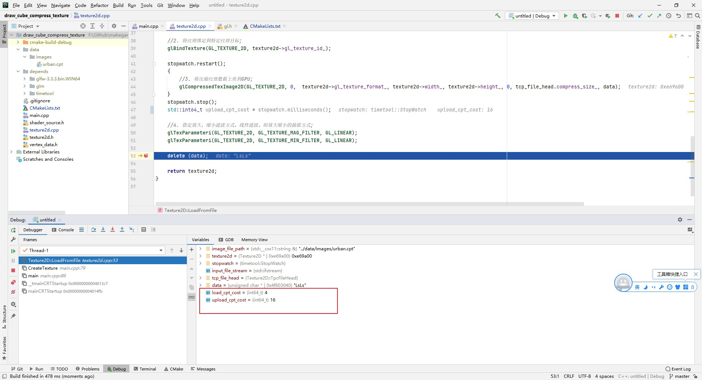

5.8 使用压缩纹理
CLion项目文件位于 samples\texture\draw_cube_compress_texture
前面了解了压缩纹理的优势，以及制作了纹理压缩的工具，这一节就加载 压缩纹理文件 urban.cpt进行渲染。
1. 加载cpt文件
之前项目中使用的是.jpg图片，.jpg图片并不是GPU支持的格式，需要借助stb_image这个库，在CPU中进行解析得到RGB数据，再上传到GPU。
本节要使用的.cpt文件，数据是从GPU下载保存的，是GPU支持的格式，所以就不需要再使用stb_image了，原来的加载流程也需要修改。
修改Texture2D::LoadFromFile，使用 C++ 标准库读取.cpt文件：
Texture2D* Texture2D::LoadFromFile(std::string& image_file_path)
{
Texture2D* texture2d=new Texture2D();
StopWatch stopwatch;
stopwatch.start();
//读取 cpt 压缩纹理文件
ifstream input_file_stream(image_file_path,ios::in | ios::binary);
TpcFileHead tcp_file_head;
input_file_stream.read((char*)&tcp_file_head,sizeof(TpcFileHead));
unsigned char* data =(unsigned char*)malloc(tcp_file_head.compress_size_);
input_file_stream.read((char*)data,tcp_file_head.compress_size_);
input_file_stream.close();
stopwatch.stop();
std::int64_t decompress_jpg_cost = stopwatch.milliseconds();
texture2d->gl_texture_format_=tcp_file_head.gl_texture_format_;
texture2d->width_=tcp_file_head.width_;
texture2d->height_=tcp_file_head.height_;
delete (data);
return texture2d;
}
在main.cpp 修改读取文件为urban.cpt：
int main(void)
{
init_opengl();
CreateTexture("../data/images/urban.cpt");
......
}
调试查看数据： 
{kind=link}
正常读取到cpt文件头信息，而且解析cpt文件耗时仅6ms！
2. 上传cpt压缩纹理数据并渲染
从cpt文件读取到文件头和压缩纹理数据之后，就可以上传到GPU进行渲染。
Texture2D* Texture2D::LoadFromFile(std::string& image_file_path)
{
......
//1. 通知显卡创建纹理对象，返回句柄;
glGenTextures(1, &(texture2d->gl_texture_id_));
//2. 将纹理绑定到特定纹理目标;
glBindTexture(GL_TEXTURE_2D, texture2d->gl_texture_id_);
stopwatch.restart();
{
//3. 将压缩纹理数据上传到GPU;
glCompressedTexImage2D(GL_TEXTURE_2D, 0, texture2d->gl_texture_format_, texture2d->width_, texture2d->height_, 0, tcp_file_head.compress_size_, data);
}
stopwatch.stop();
std::int64_t upload_cpt_cost = stopwatch.milliseconds();
//4. 指定放大，缩小滤波方式，线性滤波，即放大缩小的插值方式;
glTexParameteri(GL_TEXTURE_2D, GL_TEXTURE_MAG_FILTER, GL_LINEAR);
glTexParameteri(GL_TEXTURE_2D, GL_TEXTURE_MIN_FILTER, GL_LINEAR);
delete (data);
return texture2d;
}
和之前使用.jpg图片类似，唯一不同的是，这次我们上传的是压缩纹理数据，需要使用新的API：glCompressedTexImage2D，下面看介绍。
/**
* @brief 将压缩纹理数据上传到GPU;
* @param target 目标纹理，GL_TEXTURE_2D(2D纹理)
* @param level 当图片数据是包含多个mipmap层级时，指定使用mipmap层级。
* @param internalformat 上传的压缩纹理数据格式
* @param width
* @param height
* @param border
* @param imageSize 上传的压缩纹理数据字节数
* @param data 上传的数据
* @return
*/
void glCompressedTexImage2D(GLenum target, GLint level, GLenum internalformat, GLsizei width, GLsizei height, GLint border, GLsizei imageSize, const void * data);
需要注意 internalformat，一定要和图片压缩后OpenGL返回的压缩格式保持一致，不然会出现错误。
编译运行，正常渲染了立方体： 
{kind=link}
3. 性能提升对比
断点调试查看耗时，如图: 
{kind=link}
与使用.jpg文件进行对比：
| 解析耗时(ms) | 上传耗时(ms) | |
| jpg | 1571 | 960 |
| cpt | 4 | 16 |
有很大的性能提升。
回顾一下，我们是先将.jpg图片，解析得到RGB数据，上传到GPU进行压缩，然后再从GPU下载压缩纹理数据，保存为.cpt文件。
这其实就是Unity导入图片的时候干的活，现在你知道为什么Unity导入图片那么慢了！